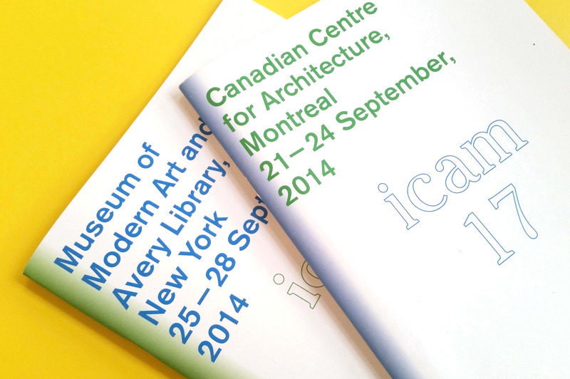
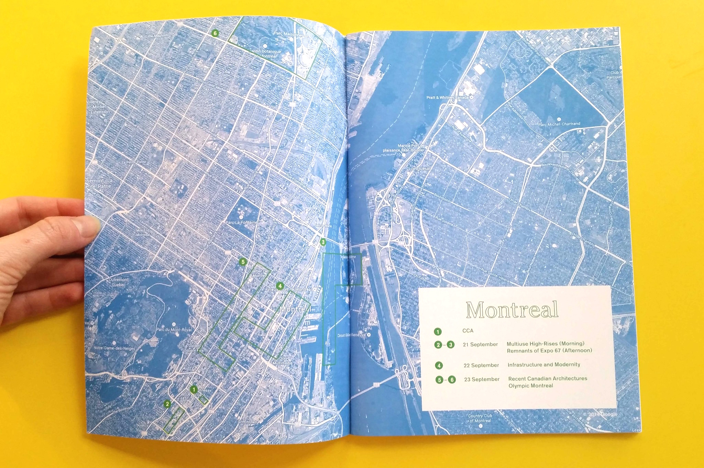
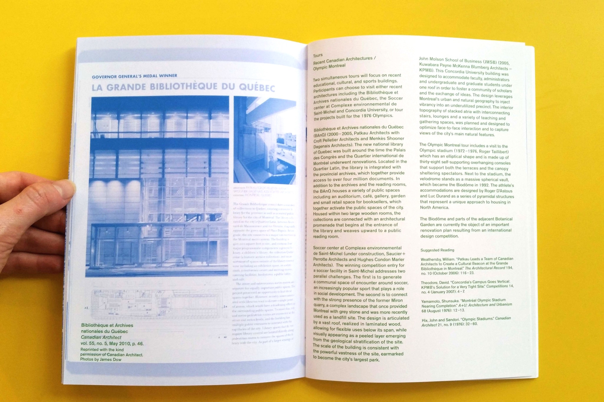
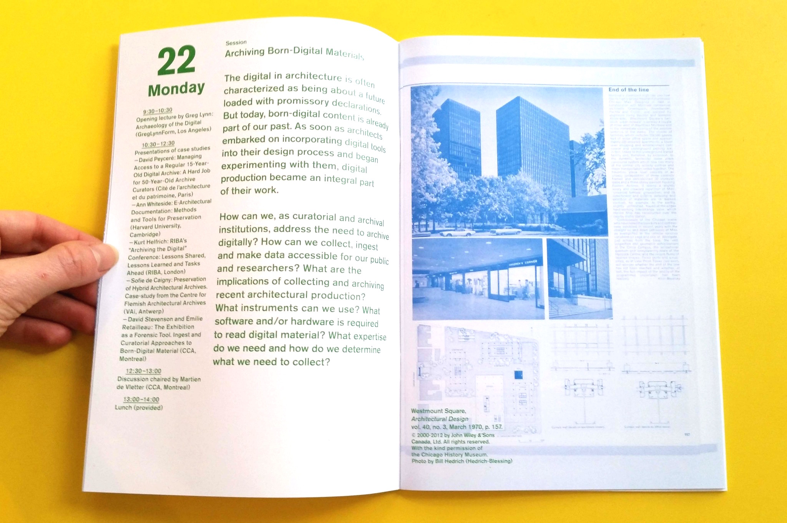

Linked By Air




International Confederation of
Architectural Museums
Medium: Print
Client: Canadian Centre for Architecture
Year: 2014
The 17th conference of the International Confederation of Architectural Museums was split between two locations: Montreal at the Canadian Centre for Architecture, and New York City at the Museum of Modern Art. Our booklet for the conference used a back-to-back design, featuring Montreal events in green from one direction and New York events in blue from the other direction. Event dates ran down the side, so that the book also functioned as a convenient calendar. A list of all speakers is the centerfold, rotated diplomatically.
Facing pages feature images from historical publications in the two institution’s archives, particularly of buildings featured on tours during the conference. The uncropped scans emphasize the physical nature of the book you are holding, and the history-telling function of the symposium members.